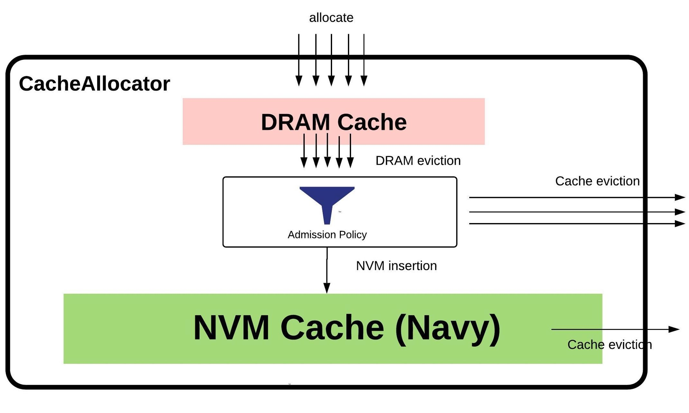
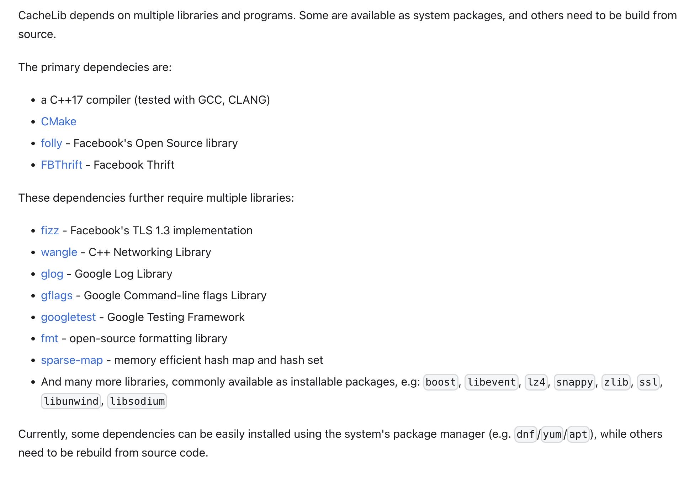

Facebook CacheLib 文档调研
https://cachelib.org/docs/Cache_Library_Architecture_Guide/overview_a_random_walk
简单地看了一下官网文档，印象中大约有这么几个功能点：
- 似乎最初只支持DRAM的，但是后来增加了NVMe的支持，然后中间有个Navy层进行协调。
- 针对Local Cache设计，但是可以在上面扩展出分布式缓存服务比如 https://github.com/twitter/pelikan
- 支持任意大小的缓存对象，对大小对象也有各自的优化策略，但是超过4MB的话需要使用Chained items进行串联存储。 https://cachelib.org/docs/Cache_Library_User_Guides/chained_items
- 可以将整个Cache划分成为多个Pool, 每个Pool有各自的DRAM大小，之间还可以进行Balance. 但是底层共享NVMe. https://cachelib.org/docs/Cache_Library_User_Guides/Partition_cache_into_pools
- 支持多种淘汰策略，LRU, SLRU, TinyLFU. https://cachelib.org/docs/Cache_Library_User_Guides/eviction_policy/
- 支持缓存对象的TTL. https://cachelib.org/docs/Cache_Library_User_Guides/ttl_reaper/
- 支持缓存对象的持久化。这个持久化功能限制很多，最重要的就是必须是程序正常退出，异常退出的话是没有办法恢复的。https://cachelib.org/docs/Cache_Library_User_Guides/Cache_persistence/
即使使用NVMe作为缓存，也需要DRAM的支持，所有item访问最后都是进入DRAM层的。因为单独管理DRAM的使用，所以它其实没有使用kernel buffer cache. 读取文件也是使用O_DIRECT来读取的，读取的时候默认会进行校验，估计读取到了DRAM之后就不会进行校验了。读取的时候支持使用同步/future/异步几种方式，因为过程会比较长，比如从NVM Cache protomote到DRAM Cache上。因为是自己管理DRAM的，所以也有OOM protection这样的策略存在：如果内存压力很大的情况下，会考虑优先刷盘到NVMe上或者是拒绝缓存。
另外就是NVMe只支持单个文件或者是RAID files. 没有办法在多个目录下面均衡。当然这个可以通过应用程序创建多个cache实例来解决，不过这种实现方式不被推荐。https://cachelib.org/docs/Cache_Library_User_Guides/Configure_HybridCache/

另外一个问题就是这个库需要依赖许多库，一些库SR里面是没有的(fizz, folly)，一些库则是有了但是需要升级(boost, openssl)，感觉集成进来难度也比较大。里面自带了和CentOS8的编译脚本，但是我们的开发环境是CentOS7, 许多库的版本是对不上的。
